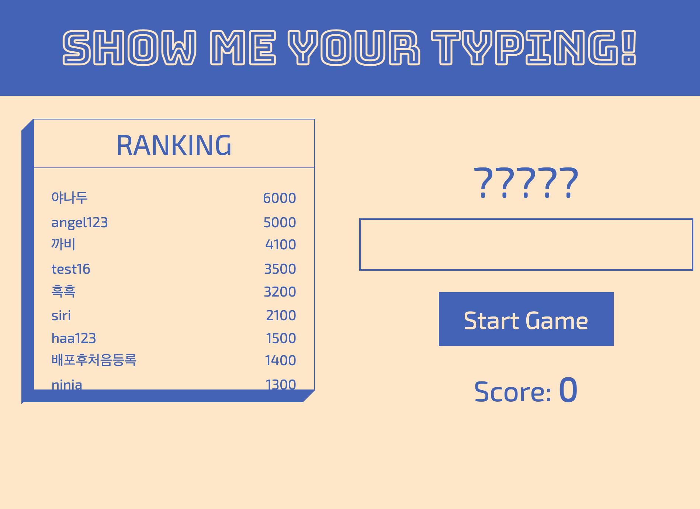

Portfolio



Who Am I
'사람'에는 서비스를 이용하는 유저 뿐만 아니라 서비스를 같이 만들어가는 동료들도 포함됩니다. 같이 일하기 좋은 개발자가 되려면 상대방의 입장이 되어 커뮤니케이션 하고, 안된다는 말보다는 차선을 제시할 수 있어야 한다고 생각합니다. '아, 이 사람하고는 일하기 수월하다'라고 느낄 수 있는 개발자가 되고 싶습니다.
FAQ
'사람'에는 서비스를 이용하는 유저 뿐만 아니라 서비스를 같이 만들어가는 동료들도 포함됩니다. 같이 일하기 좋은 개발자가 되려면 상대방의 입장이 되어 커뮤니케이션 하고, 안된다는 말보다는 차선을 제시할 수 있어야 한다고 생각합니다. '아, 이 사람하고는 일하기 수월하다'라고 느낄 수 있는 개발자가 되고 싶습니다.